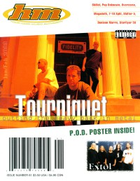

CMnexus
: Contemporary Christian culture, music, and media.
|
HMJan / Feb 2000, #81
| Cover |
|---|
|  | | Writers in this Issue |
|---|
(a girl called), Gordon
Bandoppler, Treble
Beeman, Bob
Bixler, David
Crabb II, Kemper B.
Konieczko, Melissa Marie
MacIntosh, Dan
Moe, Cynthia
Pogge, David M
Sant, John
Scheetz, Jeff
Sondova, Amy
Van Pelt, Doug
Vasey, Karen
Wilson, Gord
|
Cover Feature:
- "Seeing Past The Trees" by Dan MacIntosh
Article:So & So Says....:Album Review:
- Stavesacre - Speakeasy by Doug Van Pelt
- Training For Utopia - Throwing a Wrench into the American Music Machine by David Bixler
- Grammatrain - Live 12-07-98 by Gordon (a girl called)
- Blindside - A Thought Crushed My Mind by David M Pogge
- Extol - Mesmerized by David Bixler
- Denison Marrs - Holding Hands @ 35,000 Feet by David M Pogge
- Wooky - Pseudo by David M Pogge
- Hangnail - Hangnail by David M Pogge
- Bleach - Bleach by David M Pogge
- Starflyer 59 - Everybody Makes Mistakes by David M Pogge
- Wyrick - Aggressive State (of Christianity) by David M Pogge
- Beanbag - Free Signal by David M Pogge
- Damask Rose - Point of View by David M Pogge
- Point of Recognition - The Admiration of a Son by David M Pogge
- Five Iron Frenzy - Proof That The Youth Are Revolting by David M Pogge
- Lugnut - ...Like The Dickens... by David Bixler
- Microscopic - Microscopic by David Bixler
- Flight 180 - Lineup by Gordon (a girl called)
- The W's - Trouble with X by Gordon (a girl called)
- Stereo Deluxx - So Clearly by Gordon (a girl called)
- David Heavener - Outlaw Prophet by Gordon (a girl called)
- The Skadaddles - Thanx For Laughing by David M Pogge
- All Access - Rock N' Roll Show by David M Pogge
- Creed - Human Clay by Doug Van Pelt
- Seventh Day Slumber - Matthew Twenty Five by Gordon (a girl called)
- John Elefante - Defying Gravity by Gordon (a girl called)
- Shifter 5 - Stranded In Coolsville by David M Pogge
- various artists - Rockabilly & Western Gospel Hymns by David M Pogge
- Audio Adrenaline - Underdog by David M Pogge
- various artists - Tooth & Nail Television [video] by Gordon (a girl called)
Concert Review:
- Disciple by David Bixler
- "Vision Music Festival" by Gordon (a girl called)
The Christian and Art: "The Sons of Issachar: Knowing What Israel Should Do, Part XIV" by Kemper B. Crabb II
Pastor Bob's Column: "What Makes A Band Successful" by Pastor Bob
Poster:Licks & Tricks by Jeff Scheetz
HM Back Page: "Parental Advisory: Christian Music Is Pastoral"
|
|